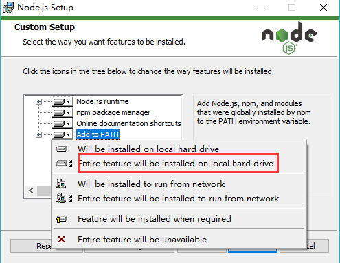
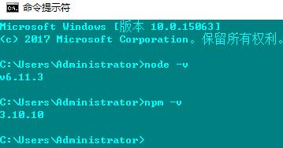
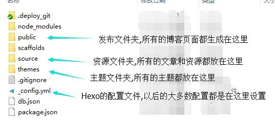

前言
Hexo是目前很流行的一种静态博客框架,通过它可以快速的生成一个静态的个人博客,你正在阅读的这个个人博客就是通过Hexo+Github实现的,下面我将讲述一下自己使用Hexo创建个人博客的过程.
环境准备
Node.js
Hexo是基于Node.js实现的一个框架,所以你需要先安装Node.js的运行环境,安装Node.js的环境很简单,只需要进入Node.js官网,在主页上直接下载运行环境就可以了,在安装的时候注意选择将环境变量添加到系统中.

安装好Node.js后,可以启动cmd窗口,输入
以及
查看效果.

如果提示
你可能需要手动添加Node.js的目录到系统环境变量中.
Github
用Hexo生成的博客需要放到服务器上进行托管,这样才能通过域名进行访问,对于大多数人来说,Github是一个很好的选择,当你在Github上创建了一个个人账户之后,Github就为你生成了一个.io域名的个人主页,用Hexo生成的博客就可以通过Git上传到Github来作为.io域名的主页内容,并以此作为个人的博客站点.
注册Github以及Github相关的基本操作不再赘述,你可以到Github的官网查看文档或者搜索Github相关的教程来学习.
当你拥有一个Github账户之后,需要一个本地的Git客户端来进行各种操作,推荐使用Git的官方客户端,这个客户端带有Bash窗口,可以在windows下使用大多数bash命令,非常方便.你可以到Git的官网进行下载.
下载Git之后,需要生成本地ssh密钥并上传到Github上,推荐查看廖雪峰的Git教程,十分通俗易懂.
安装Hexo
安装Git客户端之后,在桌面右键打开Git Bash窗口,运行如下命令安装Hexo:
npm是Node.js自带的一个包管理工具,你可以使用npm安装基于Node.js的包.
博客搭建
Hexo初始化
安装Hexo之后,首先创建一个文件夹,例如Hexo或者Blog,这个文件夹是Hexo的运行文件夹,Hexo本身的操作包括写博客和调整设置都是在这里面进行.
创建文件夹后,在该文件夹下执行init命令:
可以看到Hexo在该文件夹下生成了基础的Hexo框架文件,各个文件的意义如下:

此时你可以启动一个本地的Hexo server查看效果,执行如下命令:
在浏览器中输入http://localhost:4000 就可以查看初始的Hexo博客页面了.
在本地生成Hexo的初始化页面之后,需要将其上传到Github,然后才可以通过.io域名访问博客,Hexo提供了一个自动化上传的工具,使用npm安装就可以了:
Github创建Repository
在上传本地的博客到Github之前,你需要在Github上创建一个.io的repository,否则是无法上传的,注意repository的名字必须为【your_user_name.github.io】,例如我的Github账户名是Ghang,那么repository的名字就是Ghang.github.io.
创建repository之后需要在本地的_config.yml中进行设置,打开该文件,在deploy区域输入以下内容:
接下来在Bash中执行deploy命令,本地的博客就会自动上传到你创建的repository中.
上传之后稍等一段时间,在浏览器中输入http://ghang.github.io/ (这里注意替换为你自己的github用户名),然后就可以看到自己的博客了.
Hexo设置
Hexo的设置网上有很多教程,但是我觉得所有的教程都没有官方文档写的好,所以在完成以上步骤之后,我强烈建议你仔细的阅读一遍Hexo的官方文档,这个文档是中文版的,很通俗易懂.
博客页面的编辑推荐使用VS Code,这个软件非常好用,用来管理Hexo的页面再适合不过了.
Hexo主题
Hexo有很多好用的主题,我目前在用的是Next,当你阅读完Hexo的官方文档之后,如果想要使用Next主题,不需要到网上去搜索各种教程,直接阅读Next的官方文档就可以了,写的非常详尽,基本不需要其他多余的教程.